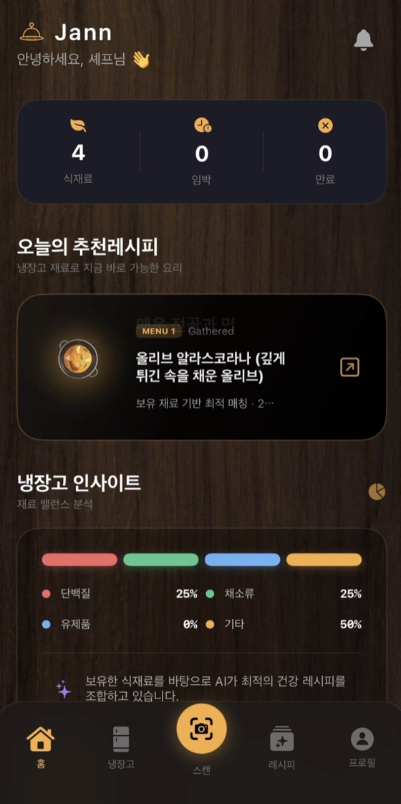
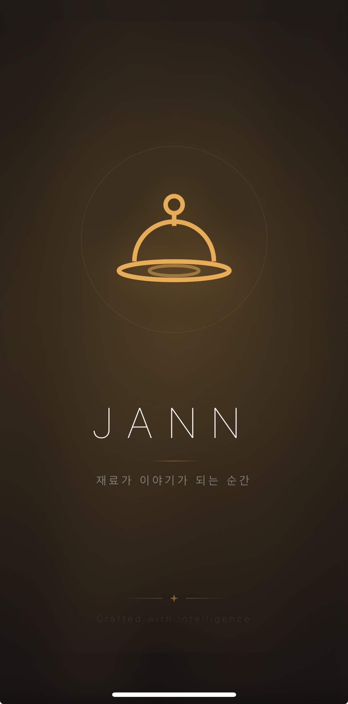
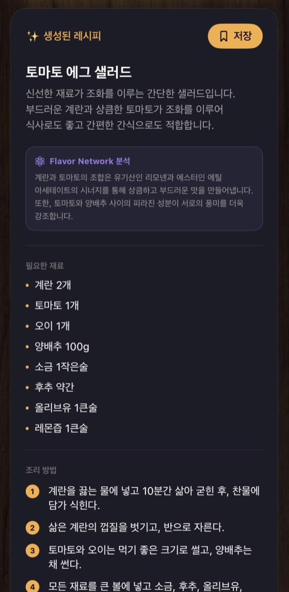
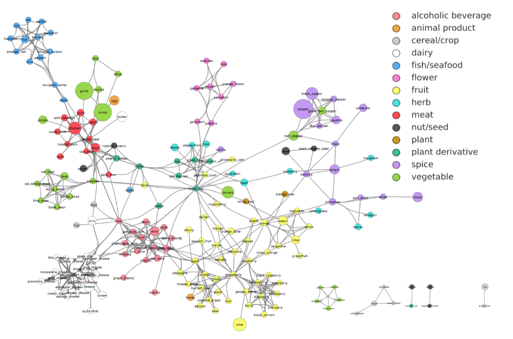
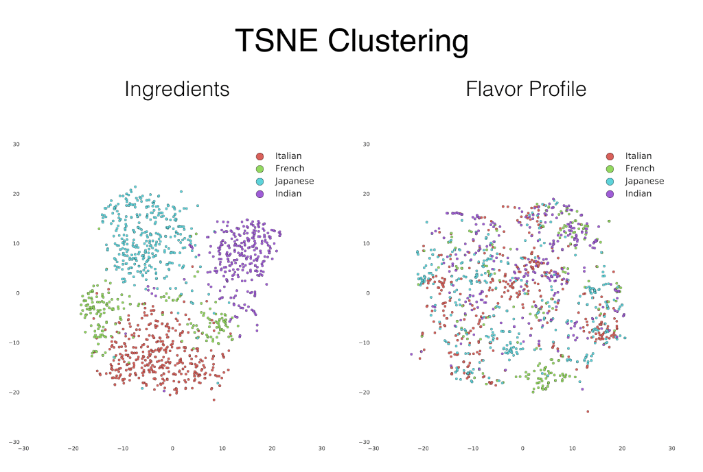

분자 미식학 · iOS App
식재료를 비추면, 왜 어울리는지까지 답하는 레시피 앱.



두 재료의 향미 호환성을 공유 화합물 수와 합집합 비율(자카드 유사도)로 계산했다. 1,107개 향미 화합물 데이터를 t-SNE로 차원 축소해 비슷한 맛끼리 군집을 만든 뒤, 그 안에서 재료를 추천한다.
Python으로 학습한 추천 모델을 CoreML로 변환해 SwiftUI 앱에 내장했다.
추론이 기기 안에서 끝나므로 네트워크 호출과 서버 비용이 없고, 입력 데이터도 밖으로 나가지 않는다.
왜 분자 미식학인가

대부분의 레시피 앱은 재료 이름·인기·태그로 추천한다.
정작 왜 이 재료들이 어울리는지는 설명하지 못한다.
그 "이유 없는 추천"이 늘 아쉬웠다.
음식의 향미는 결국 화학 화합물이다.
두 재료가 공유하는 향미 분자가 많을수록 사람은 그 조합을 더 자연스럽게 느낀다.
그렇다면 추천도 그 근거 위에 세울 수 있다고 봤다.
근거: Ahn et al., "Flavor network and the principles of food pairing", Scientific Reports, 2011
어떻게 동작하나
카메라로 식재료를 비추면 YOLOv8n이 인식하고,
향미 DB가 화합물 유사도를 계산해 레시피를 만든다.
결과에는 항상 "왜 어울리는지"가 함께 붙는다.
추천의 근거
인기순이 아니라, 두 재료가 분자 단위에서 얼마나 겹치는지로 본다.

두 재료의 향미 호환성은 공유 화합물 수 ÷ 합집합(자카드 유사도)으로 정했다. 분자 단위의 겹침을 보는 것이다.
원본 DB가 서양 식재료 중심이라, 김치·된장·고추장 같은 한국 재료에 한-영 매핑을 직접 더해 로컬라이징했다.
파이프라인 설계
인식 경로는 유연하게, 추천의 핵심인 향미 DB는 오프라인으로 고정했다. YOLO가 못 보면 GPT-4o Vision, 그다음 Apple Vision으로 넘어가는 3단계 폴백이다.
커스텀 데이터셋으로 파인튜닝한 YOLOv8n(CoreML)과 GPT-4o Vision을 병렬 실행한다. 못 보면 Apple Vision으로 자동 폴백해, 네트워크 없이도 단독 동작한다.
SQLite 내장 DB로 완전 오프라인. 자카드 유사도로 두 식재료의 향미 호환성을 계산한다. 서양 중심 원본에 한국 재료 한-영 매핑을 더했다.
인식된 재료와 유사도 결과를 구조화 프롬프트에 넣어, 요리명·재료·조리법·팁·화합물 시너지 해설까지 한 번에 만든다.
Furaneol, Butyric acid 같은 실제 화합물명과 함께 "왜 어울리는지"를 보여준다. 인기순 추천과 다른, 설명 가능한 추천이다.
엔지니어링 디테일
"YOLO를 썼다"가 아니라, 느린 학습을 어떻게 진단했고 온디바이스로 어떻게 옮겼는지.
독립 식재료 사진으로 학습한 모델은 냉장고 안 치즈를 24%밖에 못 잡았다. Roboflow의 '실제 냉장고 내부' 1,920장 · 10클래스(달걀·치즈·버터·토마토 등)로 교체하자 실사용 수준이 됐다. 같은 YOLOv8n이어도 데이터 도메인이 아키텍처보다 먼저였다.
Mac(M4 Pro)에서 에폭당 161분씩 걸렸다. 원인은 PyTorch MPS의 NMS 버그와 RAM 스왑 과부하였다. val=False·patience=0 등 학습 파라미터와 메모리 사용을 다듬어 17분으로 줄였다(약 90%↓). box_loss는 57에폭에서 1.376→0.963으로 30% 개선됐다.
monitor_and_deploy.sh가 5분마다 학습 완료를 감지해 PyTorch→CoreML 변환과 xcodebuild·xcrun devicectl로 iPhone 빌드·설치까지 자동 실행한다. 51클래스 모델은 Colab T4로 학습해 Mac으로 받아 변환했다. 1인 개발에서도 DevOps가 생산성을 갈랐다.
GPT-4o Vision이 흰 직사각형 용기를 두부로 잘못 봤다. 프롬프트 패치만으론 끝나지 않아, 모델·프롬프트·후처리 필터의 3중 방어로 접근하고 있다. 완전히 잡지 못한 한계도 솔직히 기록해 둔다.
배운 것 · 한계
연구 개념이던 분자 미식학을 실제 추천 경험으로 옮기면서, 설명 가능한 추천이 훨씬 설득력 있다는 걸 확인했다. SwiftUI–CoreML 연결부터 오프라인 DB, 3단계 폴백까지 앱으로 끝까지 만들었다.
YOLOv8n을 Python으로 학습한 뒤 CoreML로 변환해 온디바이스 추론을 붙였다. 학습 시간은 161분에서 17분으로 줄었고 box_loss도 30% 개선됐다.
원본 향미 DB가 서양 식재료 중심이라 한국 재료 매핑이 아직 얕다. 용기에 담긴 재료를 카메라로 잡는 것도 한계가 있었다.
한국 음식–화합물 매핑을 추가 학습하고, 용기 라벨 OCR과 맥락 분석을 붙여 인식 범위를 넓힐 계획이다.
데모
스플래시에서 시작해 식재료 스캔, 향미 화합물 매칭, 레시피 추천까지 — 사용자가 겪는 흐름 전체.